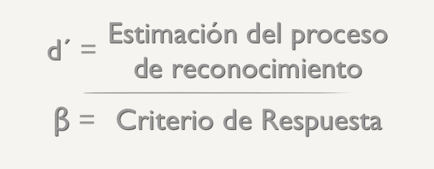
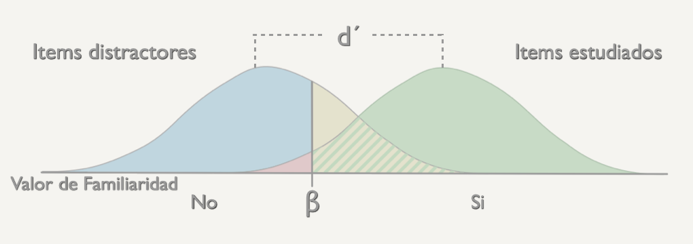

En una prueba de reconocimiento, a diferencia de las pruebas de recuerdo, se presenta como claves de recuperación los propios estímulos o ítems que se han codificado o aprendido previamente(por ejemplo, las alternativas correctas en un examen tipo test, o el sospechoso en una rueda de reconocimiento policial), junto con otros ítems nuevos, no presentes en el momento de la codificación (las alternativas falsas del examen, o las personas inocentes de la rueda de reconocimiento).
A los primeros se les denomina ítems antiguos, o de estudio, y a éstos, distractores o ítems viejos. La tarea de reconocer implica discriminar los ítems de estudio y los distractores.
Las respuestas de reconocimiento, o no, que da la persona ante la presentación de un ítem de estudio o de un distractor, pueden ser de 4 tipos. Para describirlas, vamos a considerar una prueba de reconocimiento SÍ/NO, esto es, una prueba en la que se presentan los ítems de estudio y los distractores mezclados al azar y de uno en uno. La persona tiene que responder SÍ o NO, en función de si lo reconoce o no como un ítem de estudio:
| Tipos de respuestas | ||
| Tipos de estímulos | Si | No |
| Item estudiado | Acierto | Fallo |
| Distractor | Falsa alarma | Rechazo correcto |
Conociendo el número de aciertos y el de falsas alarmas, se pueden derivar el de fallos y rechazos correctos, por lo que a la hora de considerar las respuestas de reconocimiento basta con atender al número de aciertos y falsas alarmas.
Las pruebas de reconocimiento tienen el problema de que las personas pueden responder no porque estén discriminando los ítems de estudio de los distractores, sino por adivinación, como cuando en un examen tipo test nos arriesgamos a contestar al azar y acertamos o no, pero evidentemente no estamos accediendo a un conocimiento almacenado en nuestra memoria.
En nuestra decisión de arriesgarnos pueden influir factores externos como el que se penalicen los fallos (falsas alarmas). Si se penalizan, nos arriesgaremos menos que si no. Pero también pueden influir factores de índole interna como las tendencias personales a ser más arriesgados o más precavidos a la hora de dar una respuesta de reconocimiento.
Todas estas circunstancias plantean el problema fundamental que subyace a la interpretación de la ejecución en una prueba de reconocimiento: distinguir en qué medida las respuestas se deben a la memoria, o a otros factores de índole motivacional o de personalidad, que afectan a la toma de decisión final.
Un enfoque que permite abordar este problema y aportar una solución es el que aplica los conceptos de la teoría de detección de señales (TDS) a los procesos implicados en una prueba de reconocimiento. Esta teoría proporciona una manera útil de concebir el reconocimiento que permite diferenciar entre qué hay de memoria y qué hay de adivinación en sus resultados.
La teoría asume que todas las huellas de memoria tienen grados variables de fuerza que determinan su activación en la memoria y por tanto, lo familiares que resultan. La fuerza de una huella será mayor si el ítem que representa, por ejemplo, se ha presentado o estudiado con frecuencia, o si recibió más atención en la codificación. Resulta lógico asumir que los ítems de estudio tendrán por término medio valores de fuerza mayores que los ítems distractores.
Se suele asumir que la distribución de los valores de fuerza o familiaridad es la de una curva normal y que la media de la distribución de los valores de fuerza de los ítems de estudio será mayor que la de los distractores. La magnitud de la distancia entre ambas distribuciones (la distancia entre sus medias) refleja la capacidad de la persona para discriminar entre los ítems de estudio y los distractores considerando sólo sus valores de familiaridad. A esta distancia entre las medias se la llama d’ en la TDS.
A esta medida, la d’, le afectan las variables que tienen que ver con la memoria: número de repasos de los ítems de estudio, grado de atención al codificar, etc. Pero no los otros factores de índole motivacional o psicológica, que mencionamos antes como los sesgos de respuesta o la adivinación. Estos factores afectan a lo que en la TDS se llama el criterio de decisión (β). Este criterio representa un valor de familiaridad que se supone la persona adopta en la tarea de reconocimiento, de modo que ante un ítem, sea de estudio o distractor, cuya huella tenga un valor de fuerza mayor que el de β, la persona responderá que sí, que se trata de un ítem de estudio, y si es menor, que se trata de un distractor.
De acuerdo pues con la TDS, la presentación de un ítem desencadena un proceso de acceso directo a su huella de memoria que permite evaluar su valor de fuerza o familiaridad que en la medida que sea mayor o menor que el del criterio de decisión adoptado, la respuesta de reconocimiento será afirmativa o negativa.
En el valor de β influyen factores como la motivación de la persona a arriesgarse más o no en función de si por ejemplo, se penalizan las falsas alarmas. Si se penalizan, el criterio se volverá más conservador o estricto que si no se penalizaran. Por tanto, a través de la estimación de estos parámetros, d’ y β, la TDS puede ofrecer una distinción entre el reconocimiento basado verdaderamente en la memoria, y el determinado por otros factores que inciden en la toma de decisiones.
Como puede observarse en las gráficas, las variaciones en d’ y en β, dan lugar a distintos porcentajes de aciertos y falsas alarmas.
| Respuestas | Participante A | Participante B |
| Aciertos | 90% | 75% |
| Falsas alarmas | 90% | 10% |
Con un criterio de decisión poco estricto aumentan los aciertos, pero también las falsas alarmas. A medida que el criterio de decisión se hace más estricto van disminuyendo las falsas alarmas. Si el criterio es muy estricto sólo se darán aciertos ya que sólo contestará SI a los que esté plenamente seguro de que es un item estudiado.
| Respuestas | Participante A | Participante B |
| Aciertos | 90% | 75% |
| Falsas alarmas | 90% | 10% |
Esto es lo que pasa cuando cambia la familiaridad